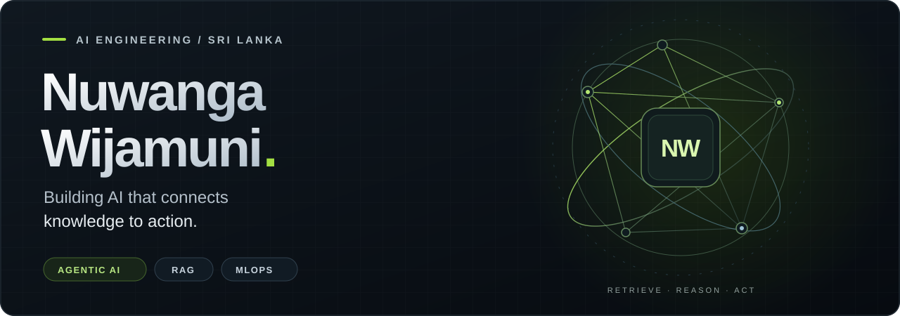
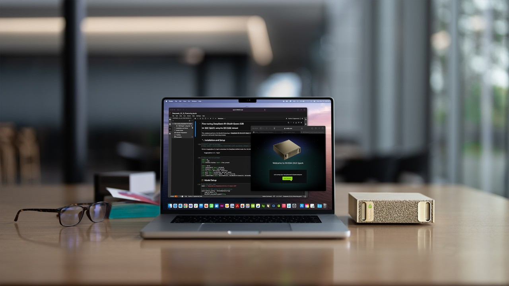
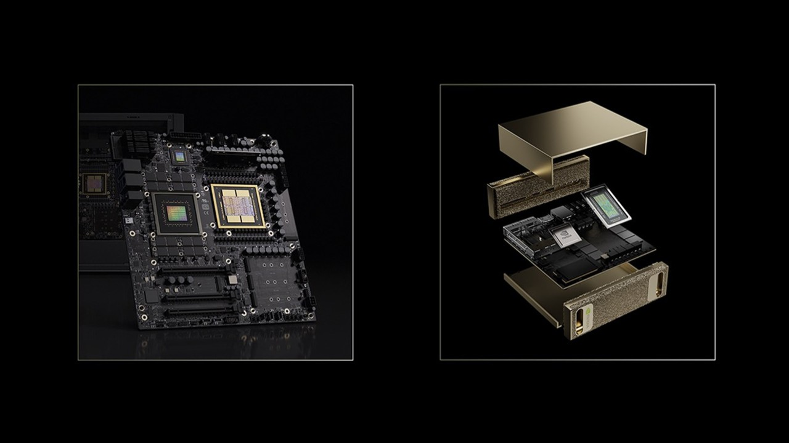

AI Engineer · Agentic AI · Retrieval-Augmented Generation · MLOps
Negombo, Sri Lanka / Enterprise knowledge · Multimodal experiences · Cloud systems
LinkedIn ↗ / Email ↗ / Repositories ↗
I build AI systems that connect business knowledge, language models, and useful actions. My work spans agentic retrieval, conversational interfaces, natural language-to-SQL, and the infrastructure that brings them together.
At HSB Marine Constructions, I work on company knowledge applications and approval-based automation. Previously, I worked in data engineering at One Billion Tech and data science at MAS Holdings.
My engineering priorities: source-linked answers, traceable agent workflows, clear human approval points, and reproducible deployments.
01 / Selected work
AGENTIC RETRIEVAL
Commerce Knowledge AgentAn agentic RAG system that combines product information from SQL, vector retrieval, and object storage. LangGraph coordinates the workflow; LangSmith makes agent interactions traceable.
|
VOICE + VISUAL INTERACTION
Gourmet ExpressA conversational restaurant assistant that connects voice commands to a visual menu and shopping cart. Tool calls turn conversation into interface actions over WebSockets.
|
NVIDIA NIM + GEOSPATIAL AI
GeoNIM Satellite AnalyzerA pipeline for multi-gigabyte satellite imagery, using image tiling and NVIDIA NIM vision-language models to extract structured environmental observations and map anomalies.
|
DOCUMENT INTELLIGENCE
Containerized RAG PipelineA PDF question-answering application with document extraction, chunking, embeddings, and vector retrieval. FastAPI and Docker Compose package the application for local execution.
|
02 / NVIDIA · Agentic AI & local compute
NVIDIA Agentic AI training completed. I am interested in connecting practical agent workflows with accelerated inference, multimodal models, and local AI infrastructure.
|
 DGX Spark · Desktop AI development |
 Inside the platform · Grace Blackwell architecture |
| Focus | My work & direction |
|---|---|
| Applied · NVIDIA NIM | Used vision-language inference in GeoNIM for satellite-image analysis and structured JSON extraction. |
| Built · Agentic workflows | Combined LangGraph orchestration, retrieval tools, and LangSmith tracing; developed approval controls for business automation. |
| Research · DGX Spark | Investigated company workloads across documents, images, audio, and video, including laptop connectivity, fine-tuning, and image-generation requirements. |
| Exploring · NeMo Agent Toolkit | Interested in workflow evaluation, profiling, and observability across agent frameworks. |
My next research direction is a local enterprise AI workbench: document retrieval, multimodal understanding, and tool-using agents evaluated against real business tasks.
NVIDIA Agentic AI ↗ · NVIDIA NIM ↗ · NeMo Agent Toolkit ↗ · DGX Spark Playbooks ↗
Product imagery: NVIDIA. DGX Spark is an infrastructure research interest; the images illustrate the platform.
03 / Engineering toolkit
| Layer | Technologies |
|---|---|
| Agents & LLMs | LangChain · LangGraph · LangSmith · NVIDIA NIM · Hugging Face Transformers · QLoRA / PEFT |
| Retrieval & data | Weaviate · ChromaDB · PostgreSQL · MySQL · Snowflake · SQLAlchemy |
| Application engineering | Python · SQL · FastAPI · Flask · Streamlit · WebSockets |
| Cloud & deployment | AWS SageMaker / ECR / S3 / RDS · Google Cloud Vertex AI / Cloud Run · Docker · GitHub Actions |
| Operations & integration | Kubernetes · KServe · MLflow · Prometheus · Grafana · Airflow · Google Drive · Asana |
More tools & applied methods
ML & vision: scikit-learn, OpenCV, MediaPipe, Pandas, rasterio, GeoPandas.
Data & analytics: Power BI, forecasting, data pipelines, query optimization, and stored-procedure logging.
AI application design: prompt and context engineering, hybrid conversational memory, source attribution, structured outputs, and human-in-the-loop workflows.
04 / Experience
| Organization | Role & contribution |
|---|---|
| HSB Marine Constructions Oct 2025 – Present |
AI Engineer · Contract Local company RAG application; ChatGPT–Google Drive–Asana task triage; Company Brain knowledge structures and AI architecture evaluation. |
| One Billion Tech Aug 2024 – Jul 2025 |
Data Engineer Intern RAG deployment with LLaMA and Weaviate; natural language-to-SQL applications; Snowflake query optimization and data-load logging. |
| MAS Holdings Mar 2023 – Mar 2024 |
Data Scientist Intern Sales forecasting with ARIMA, Prophet, and LSTM; automated data preparation; Power BI dashboards. |
05 / Education & credentials
- Bachelor of Information Technology, Specialization in Data Science — SLIIT, 2020–2024.
- AWS Certified Data Engineer – Associate (DEA-C01) — earned in 2024.
- NVIDIA Agentic AI training — completed.
- SLIIT Datathon 2022 — finalist and merit award for an AI-based monkeypox detection model.
- ML Nexus Quiz Competition — second runner-up, University of Colombo.
Let's build useful AI, with the engineering to support it.
nuwanga69@gmail.com
·
Connect on LinkedIn